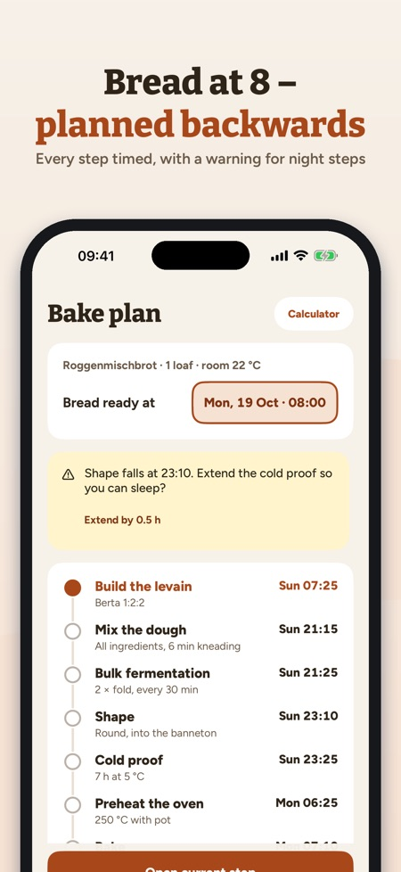
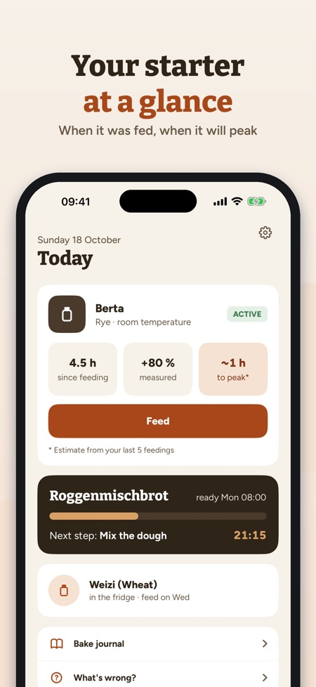
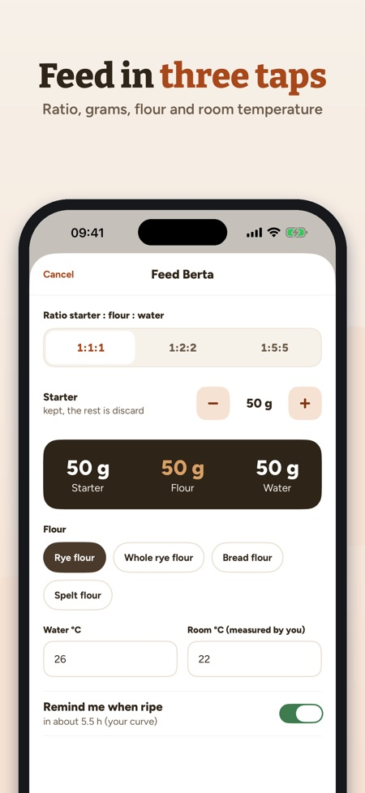

Feed your starter, plan bakes. Bread ready at 8 am? Riseplan works backwards to when you start, mix and fold – and warns you when a step falls in the middle of the night.



Your sourdough companion: feed, plan, bake – all in grams and °C.
STARTER
• One or more starters (rye, wheat, spelt) with age and feeding history
• Feed in three taps: ratio 1:1:1, 1:2:2 or 1:5:5, grams, flour, water and room temperature (measured by you)
• A reminder when your starter is ripe – from your own curve
• Fridge mode with a weekly reminder
RISE CHART
• Measure the height after feeding and see your own curve
• Average time to peak and maximum volume from your last feedings
• How much faster your starter is in a warmer room – from your own data
BAKER'S PERCENTAGE CALCULATOR
• Dough weight, hydration, starter and salt → flour, water, starter and salt in grams
• The flour and water inside the starter are counted
BACKWARDS BAKE PLAN
• Pick when the bread should be ready – Riseplan works out every step backwards
• Fermentation times follow your room temperature (labelled as a rule of thumb)
• A warning when a hands-on step falls in your quiet hours, with a longer cold proof suggested
• A reminder for every step
ACTIVE BAKE STEP
• Big timer, stretch-and-fold counter, the next step in view
RECIPES
• Landbrot, Roggenmischbrot, Roggenbrot, Desembrood, Rågbröd/limpa, Grovbrød, Rugbrød, Ruisleipä, pizza and pancakes from starter discard
• Flour names from your country
BAKE JOURNAL AND HELP
• Photos, stars and notes for every loaf
• What to do about liquid on top, a slow rise, a flat loaf or too much sourness? Mould: throw it away.
PURCHASE
Without a purchase: one starter, feeding, reminders, the calculator and three recipes. One purchase unlocks everything: several starters, the rise chart, the bake plan, the active bake step, all recipes and the bake journal. No subscription, no ads.
PRIVACY
Your data stays on the device. The app sends anonymous usage statistics through Google Analytics for Firebase (e.g. which screens and buttons are used, in-app purchases and the approximate country); but only if you switch this on at the start or in Settings (off by default).